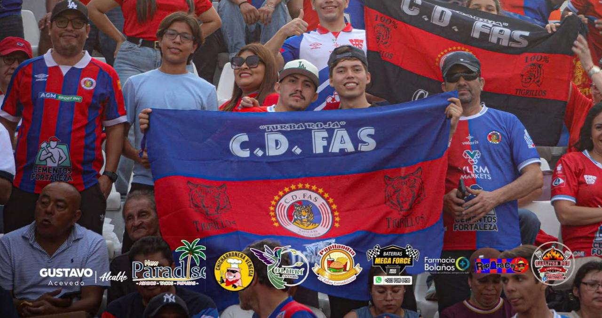

Mi página -Biografía
Víctor
Quijada.
Desarrollo Web I · Carnet 20255714
Este es mi espacio para presentar una pequeña biografía sobre mí y mis gustos.
Sobre mí
Mi nombre es Víctor Quijada, tengo 19 años y estoy en mi segundo año en la Escuela Superior de Economía y Negocios estudiando Ingeniería de Software y Negocios Digitales donde me estoy enfocando no solo en como programar,también los negocios estan presentes en mis estudios.
Mi lugar de nacimiento fue en el occidente del país, en la ciudad de Santa Ana en El Salvador.
Mis gustos y pasiones
- Mi deporte favorito es el fútbol
- Una de mis pasiones es la música
- El café y el barismo son otros grandes temas de interés

Más sobre mí
Víctor
Fuera del ámbito académico y la programación, disfruto dedicar tiempo a las cosas que más me gustan. El fútbol es una de ellas; siempre ha sido un deporte que disfruto, ya sea viéndolo, jugando o viviendo la experiencia de estar en un estadio. También tengo un gran interés por la música, que forma parte de mi día a día, y por el mundo del café y el barismo, sobre el cual me gusta aprender cada vez más.